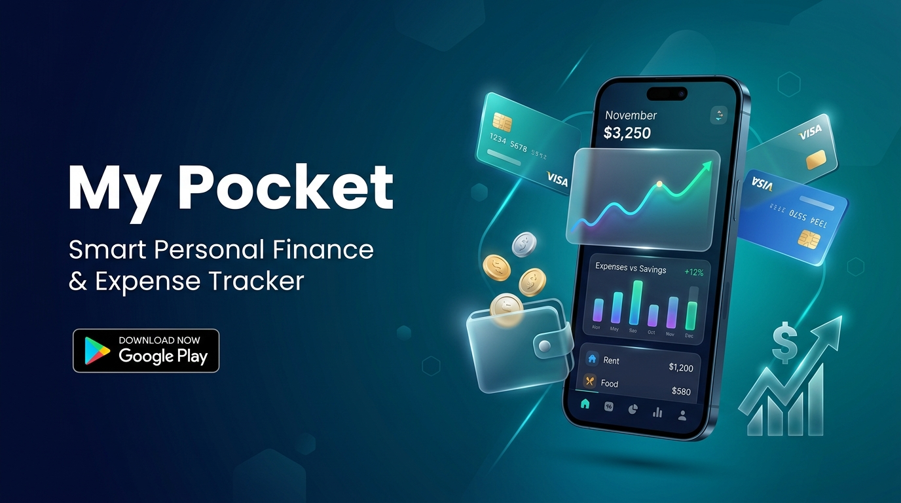
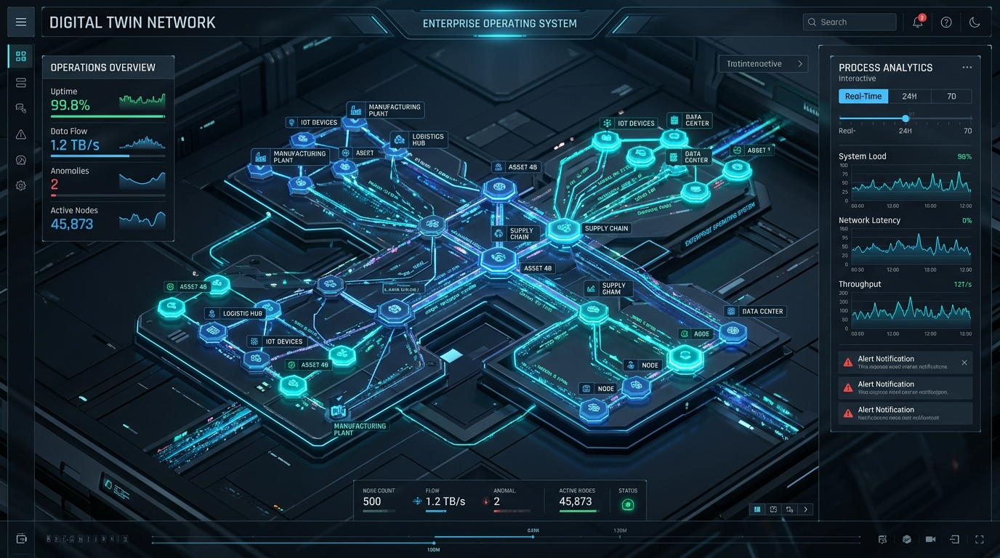
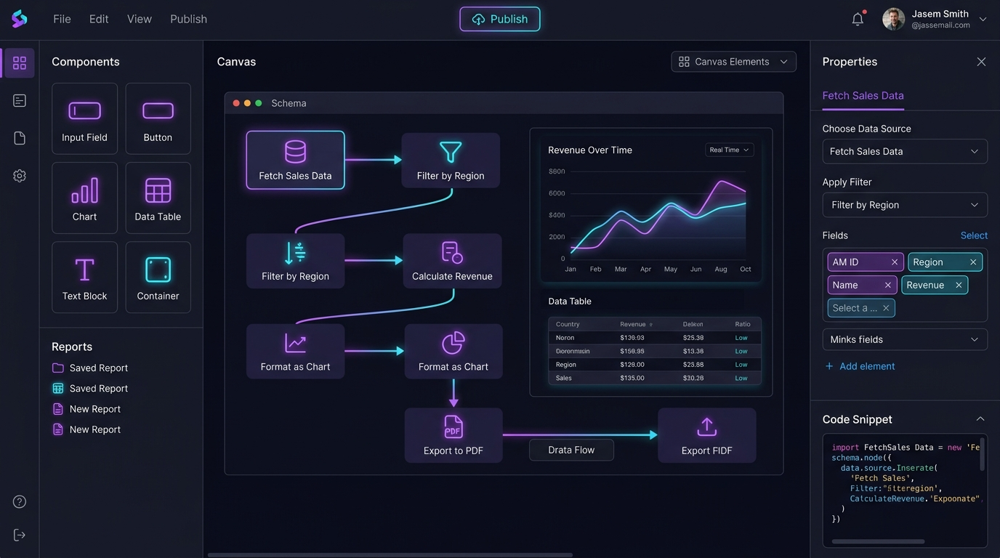

Senior Software Engineer and Full-Stack Architect with 10+ years of proven engineering impact. Currently driving high-performance Angular & React SPAs for Boxarr Ltd, UK's enterprise Digital Twin platform. Specialized in modular frontends, high-throughput Python/.NET APIs, containerized microservices, and cross-platform mobile engines.
Over a decade of progressive engineering leadership, architecting mission-critical platforms across the UK, India, and global clients.
BOXARR is a cutting-edge enterprise modeling engine built on the boxes-and-arrows paradigm, enabling global corporations to map, analyze, and optimize business processes, roles, and supply chains into a unified Digital Twin of their Organization.
Delivered enterprise hospitality and workflow solutions including Instio (integrated digital platform for mobile check-in, guest management, and service quality monitoring) and Workhorse.
Key contributor to Expressbase RAD, an open-source (GPL v3 on GitHub ↗) multi-database, multi-tenant low-code platform designed to build enterprise business applications 10x faster with drag-and-drop form builders, dynamic reporting, chatbots, and APIs. Publicly accessible and auditable code repositories on GitHub.
Core enterprise systems I've designed and delivered—from digital twins to rapid application builders and native cross-platform engines.

Privacy-first, zero-cloud personal operating system unifying Money Hub, Life Engine, Contextual Life Timeline, 30-day Cash Flow forecasting, and Asset Vault into a single connected context.

Contextual graph modeling tool based on the boxes-and-arrows paradigm, mapping complex enterprise operations, dependencies, and resources into an interactive digital twin.

Multi-tenant, multi-database open-source platform (github.com/expressbasesystems) for building enterprise applications 10x faster with drag-and-drop report builders and dynamic API engines.
Cross-platform native mobile application generator built with Xamarin that transforms visual drag-and-drop page configurations into native Android and iOS views dynamically.
Integrated digital solution for contactless mobile check-in, automated guest service management, and quality monitoring for luxury hotels and resorts.
Demonstrated proficiency across front-end frameworks, backend APIs, mobile platforms, databases, and DevOps tooling.
Deep mastery in modern Angular (v14–v18+) and legacy AngularJS. Enterprise SPAs, modular architecture, custom directives, RxJS, and dynamic components.
Building component libraries, hooks, functional programming, strict type safety, state synchronization, and reactive graph interactions.
High-throughput REST APIs, dynamic schema builders, dependency injection, server-side document rendering, and multi-tenant security layers.
Asynchronous APIs with FastAPI, custom reusable Django packages, background queue processing, and integration with third-party telecommunications.
Custom plugins, high-concurrency Node.js reverse proxies, npm tooling, DOM optimizations, and legacy PHP web development.
Architect of My Pocket (offline-first personal OS). Reactive UI with Riverpod 2.0, clean architecture, GoRouter navigation, fl_chart visualizations, and Play Store release.
Created RMad dynamic mobile framework where drag-and-drop page schemas render directly to native Android and iOS controls.
Cross-platform web-wrapped hybrid mobile apps, responsive mobile styling, native device plug-in integrations, and touch gestures.
Local-first SQLite database architecture, atomic schema migrations, DAO query patterns, encrypted local backups, and zero-cloud privacy design.
Schema architecture, indexing strategies, complex query tuning, JSONB document querying, and multi-tenant data isolation.
Containerization of polyglot stacks, Docker Compose environments, microservice decoupling, Signalwire Relay webhooks, and deployment workflows.
GitHub, GitLab, BitBucket, Jira project tracking, CI/CD pipelines, pre-sales prototyping, customer presentations, and code review mentorship.
Solid foundational qualifications in advanced computer applications and mathematical physics.
Whether you are looking to architect a mission-critical enterprise SPA, migrate legacy systems to microservices, or explore technical leadership roles, feel free to reach out directly.